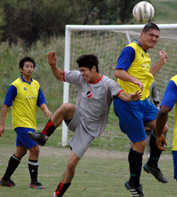
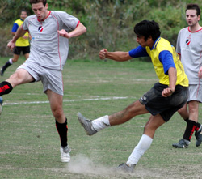

|
Misato, Sunday 14th October,
With confusion still surrounding the previous Maritizio & Barbadians fixture over a supposed game forfeit, as suffered by the Swiss to the Hibs moments before, it was clear from the re-scheduled fixture itself that there was likely to be an added bite to this game. This being more so the cases since both teams were appearing to be potential 2nd division front runners, with similar points on the table.
Both teams started at asomewhat determined pace, but it was Barbarians who looked more eagerto set the scene. It soon became apparent that the exceptional pace of the Barbarians’ loan striker could prove to be a significant problem for the Maritizio defense. While pretty much at Stale- Mate midway through the first half, it was from this point that things became livelier. Not least as the Maritizio left back “Roberto”, who had just returned from a 3 week absence was taken out of the game following an over zealous challenge.
Not withstanding the subsequent accumulation of firmer challenges from both sides seemingly played into Maritizio’s hands, which resulted in the first breakthrough. Barbians were dispossessed in midfield which allowed Maritizio to put together a succession of swift passes resulting in a simple tap-in for the Maritizio forward - Henry.

With just a singe goal separating both teams at haft time, the second half continued as the first, albeit it at an elevated pace. It was Maritizio’s Henry again whose constant probing provided further daylight between the two teams, with another well taken individual effort to calmly slide the ball into the Barbarian’s net. This prompted Barbarians to press even harder, which moments later resulted in a penalty awarded which was converted with ease. With 10 minutes or so remaining Barbarians switched to all out attack, while for Maritizio it was all hands on deck in defense. At the final whistle Maritizio held firm for their third successive win, even if looking rather unconvincing in doing so.
Report by Vernon Gil
|